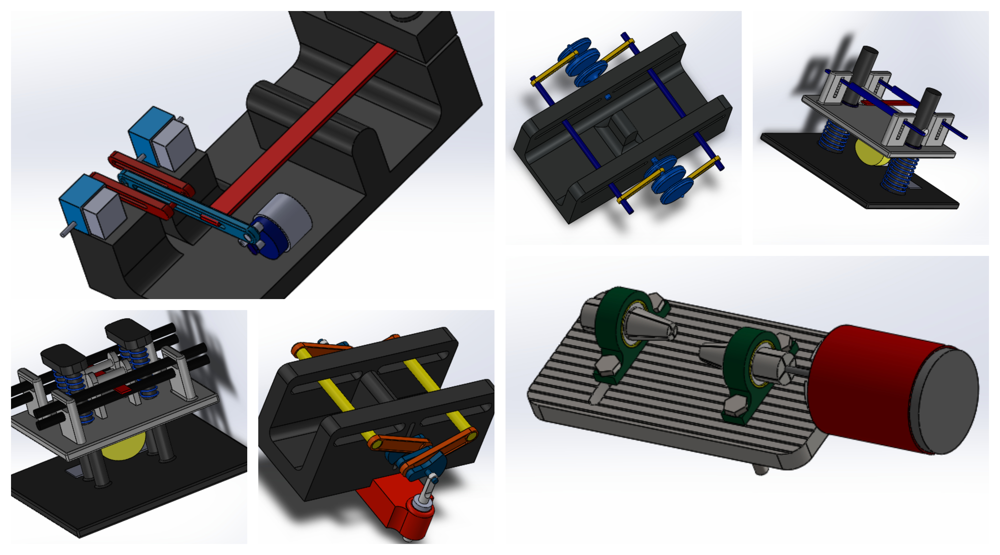

My IISc internship
I was introduced to IISC, India's premier research institute as an intern trying to get some research experience. IISC is a universe onto its own. In the heart of Bangalore IISC boasts a lush campus, a decorated faculty and a rich history of seminal research. I had the the opportunity to work under the guidance of Prof. Satish Vasu Kailas on a short but interesting topic.
Fatigue based design is a huge domain that spans mechanical system design, civil engineering and architecture. Although designing a 'miniature fatigue testing rig' seems like a simple and straightforward problem statement for a student who had experience in component design, I had no idea of where exactly to start from. Here I learnt that a project always begins with reading. I thoroughly familiarised myself with fatigue and it's mechanics, basic product design process, dynamics of scaling for analysis and FMEA. With that clarity I jumped into writing a requirement sheet, an FMEA and started the iterative process of designing the actual rig.
In my brief period at IISc (2 months)< I was fortunate enough to work on this topic, but more importantly left humbled and hopefully wiser because of the holistic advices and directions of Prof. Satish, for which I am forever grateful